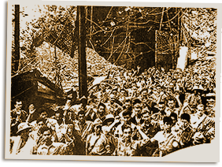

|
j
a v a s c r i p t |
Pg.1/2
May 7, 1942
A Japanese communiqué said landings on the tail end of Corregidor were made at 2300 on May 5 despite "desperate resistance of the Fil-American Forces." By 1100 on the following morning, they had occupied Malinta Hill and the fate of the fortress was sealed. Domei: The first landing was followed by a second, third and fourth waves of Japanese forces who set foot on the island fortress at dawn on May 6. Under a bright moonlight, the Japanese forces in dauntless bayonet charges pressed the enemy defenders to the three sides of Corregidor.

Malinta Tunnel
La Vanguardia: "Wainwright captured with his staff ... Total occupation of Corregidor about to happen ... The Japanese captured the fort using suicide tactics, the first operation of it's kind in history." Here is the entire translated Domei article: From a base in Corregidor: Lt. Gen. Jonathan Wainwright, not being able to resist the devastating Japanese attack, offered to personally surrender at 11:00 at night at the foot of Mount Malinta, when the Japanese soldiers that landed were able to surround the General and his staff. KZRH said that Wainwright would be on the air sometime after 2200 tonight. "In the meantime, we have a special program of music which we are dedicating to all who still cannot see the light and who have a mistaken conception of loyalty." We were then served with popular American music just to make sure people would listen. At 2320 the music was interrupted: Calling General Sharp and Generals J.P. Horan and Nakar. This is station KZRH. Please stand by until 11:30. Lieutenant General J. Wainwright has an important message for you. |
|
|
|
|